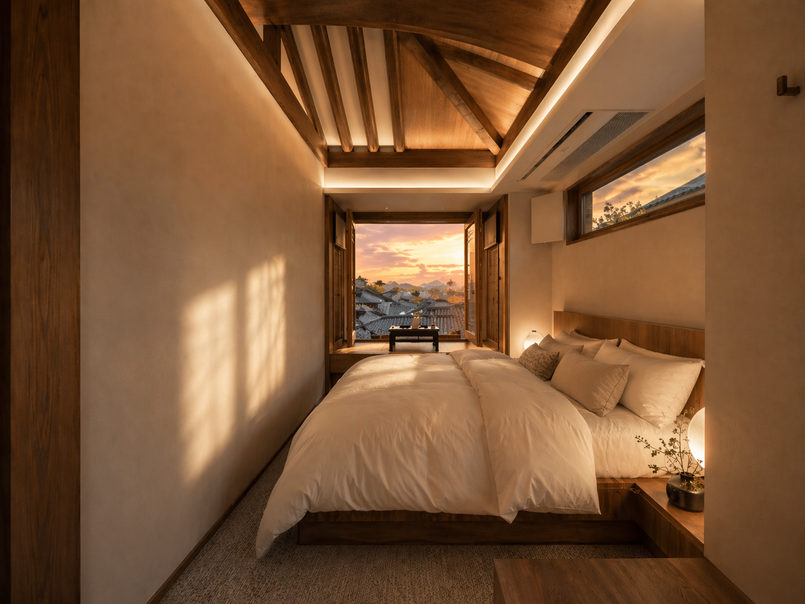
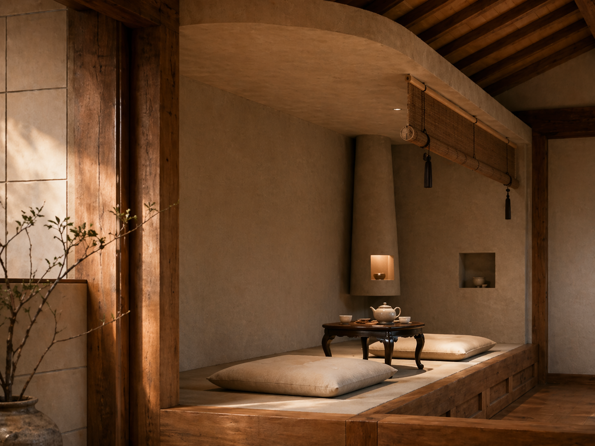
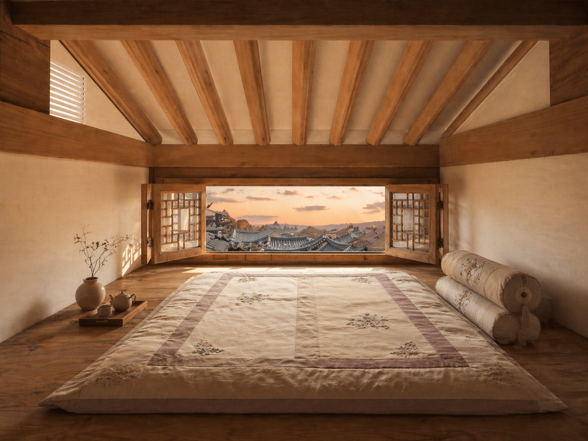
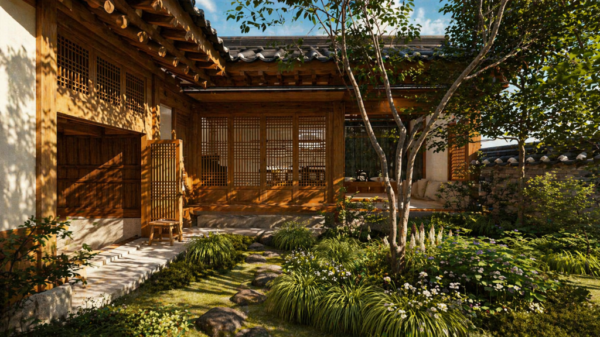

필수 정보
Wi-Fi · Access · Check-in
Wi-Fi
Network
ANAN_5G 확인 필요
Password
anan1920! 확인 필요
출입 · Door Lock
대문 도어락에 비밀번호를 입력한 뒤 # 버튼을 눌러주세요. 비밀번호는 체크인 당일 문자로 안내드립니다.
확인 필요 도어락 방식(비밀번호/카드)과 전달 방식 확정 필요
체크인
15:00 확인 필요
Check-in from 3 PM
체크아웃
11:00 확인 필요
Check-out by 11 AM
주차 · Parking
북촌 한옥마을 특성상 숙소 앞 주차는 어렵습니다. 인근 공영주차장 이용을 권해드립니다.
확인 필요 제휴·추천 주차장 위치와 요금 확정 필요
자쿠지 사용법
100년의 처마 아래, 오늘의 온도
안안의 시그니처, 처마 아래 전망 자쿠지입니다. 아래 순서대로 준비하시면 가장 좋은 온도의 시간을 만날 수 있습니다.

배수 마개 잠그기
욕조 바닥의 마개가 완전히 닫혔는지 먼저 확인해주세요. 확인 필요
온수 받기
온수 수전을 열어 물을 받습니다. 적정 수위까지 약 20~30분이 걸립니다. 확인 필요
온도 확인
권장 온도는 38~40℃입니다. 들어가기 전 손으로 온도를 확인해주세요.
사용 후 배수
사용을 마치면 마개를 열어 물을 완전히 비워주세요. 다음 사용을 위한 배려입니다.
음주 후 이용은 삼가주시고, 15분 이상 연속 입욕 시 잠시 쉬어가세요. 겨울철에는 욕조 주변 바닥이 미끄러울 수 있습니다.
자주 묻는 질문
- 물이 미지근해요 — 보일러 온수 온도를 확인해주세요. (Chapter IV 참고)
- 야간에도 이용 가능한가요? — 가능합니다. 다만 22시 이후에는 이웃을 위해 조용히 이용해주세요.
- 입욕제를 써도 되나요? — 준비된 입욕제만 사용해주세요. 확인 필요
냉난방
Air Conditioning · Ondol

에어컨 · Air Conditioner
- 리모컨은 침실 협탁 위에 있습니다. 확인 필요
- 전원 버튼을 누른 뒤, 희망 온도는 24~26℃를 권장합니다.
- 외출 시에는 전원을 꺼주세요.
확인 필요 에어컨 모델 확정 후 리모컨 사진과 버튼별 안내로 교체 예정
온돌 · 보일러 (겨울)
- 보일러 조절기는 주방 벽면에 있습니다. 확인 필요
- 실내 난방은 '실온' 모드에서 22~24℃를 권장합니다.
- 온수가 미지근할 때는 '온수' 온도를 한 단계 올려주세요.
가전 · 비품
Kitchen · Tea · Amenities


주방 가전
- 인덕션 — 전원 터치 후 화력(1~9)을 선택하세요. 냄비를 올려야 작동합니다. 확인 필요
- 전자레인지 — 싱크대 상부장 아래에 있습니다. 확인 필요
- 냉장고 — 웰컴 드링크가 준비되어 있습니다. 자유롭게 드세요.
커피 · 티 공간
- 드립 커피 도구와 원두, 그리고 계절의 차가 티 공간에 준비되어 있습니다. 확인 필요
- 전기포트는 다실 선반에 있습니다.
- 다구는 사용 후 가볍게 헹궈 건조대에 올려주세요.
코클 · 전통 화로
안안의 전통 화로 '코클'은 호스트의 안내에 따라 이용해주세요. 안전을 위해 임의 점화는 삼가주시기 바랍니다. 확인 필요
비품 위치 안내
- 수건 · 여분 침구
- 침실 반닫이장 확인 필요
- 드라이기
- 욕실 수납장
- 어메니티 (샴푸·바디워시)
- 욕실 · 자쿠지 옆
- 구급함
- 주방 서랍 확인 필요
- 우산
- 현관 옆
- 보드게임 · 책
- 다락
쓰레기 처리
Waste & Recycling
서울은 쓰레기를 세 가지로 나눠 버립니다. 분리가 어려우면 주방에 모아두고 가셔도 괜찮습니다 — 저희가 마무리하겠습니다.
일반 쓰레기
흰색 종량제 봉투
(주방 서랍)
음식물
노란색 전용 봉투
(싱크대 아래)
재활용
병·캔·플라스틱·종이
분리 바구니
배출 요일 · 장소
배출은 지정 요일 저녁, 대문 앞 지정 위치에 해주세요.
확인 필요 가회동 배출 요일·시간·위치 실측 후 확정 (종로구 기준)
하우스룰
이 집을 아끼는 방법
100년을 견딘 집에는 그만한 이유가 있습니다. 몇 가지만 지켜주시면, 이 집은 다음 100년도 견딜 수 있습니다.


안안에서의 북촌
Bukchon, from ANAN
안안은 북촌에서 하늘과 가장 가까운 자리에 있습니다. 대문을 나서면 북촌 8경 중 가장 아름답다고 불리는 풍경이 걸어서 닿는 거리에 있습니다.

북촌 8경 · 제4경 도보 이동
기와지붕의 물결을 내려다보는 북촌의 대표 조망. 눈 내린 아침이면 하얀 지붕의 너울이 발아래 펼쳐집니다. 이른 아침이나 해 질 무렵이 가장 아름답습니다. 확인 필요: 안안 기준 도보 시간
지도에서 보기아침 산책 코스 약 40분
안안 → 북촌 8경 골목 → 삼청동 돌계단길 → 카페 거리 → 안안. 관광객이 몰리기 전, 오전 9시 이전의 북촌은 온전히 걷는 사람의 것입니다.
호스트 추천 — 맛집 · 카페
확인 필요 오픈 전 호스트 실방문 기준으로 작성 예정. 상호 · 도보 시간 · 휴무일 · 한 줄 추천 이유 형식으로 5~7곳 큐레이션합니다.
편의점 · 약국 · 생활
- 편의점 — 확인 필요: 최단거리 편의점
- 약국 — 확인 필요: 인근 약국 + 심야약국
- 지하철 — 3호선 안국역 (마을 입구 방향)
비상시
침착하게, 아래 번호로 바로 연결하세요. 번호를 누르면 즉시 전화가 걸립니다.
화재 · 구급
119
Fire & Ambulance경찰
112
Police관광 통역 안내
1330
Tourist Hotline (EN/JP/CN)호스트 직통
010-0000-0000
확인 필요소화기 위치: 주방 · 현관 확인 필요 · 인근 병원: 확인 필요 (서울대병원 등 실측 후 기재)
떠나시기 전에
Before you leave
다섯 가지만 확인해주시면 충분합니다. 설거지와 침구 정리는 하지 않으셔도 됩니다.
안안에서의 하루가 오래 남는 기억이 되었기를 바랍니다.
A hundred years standing. One night, yours alone.